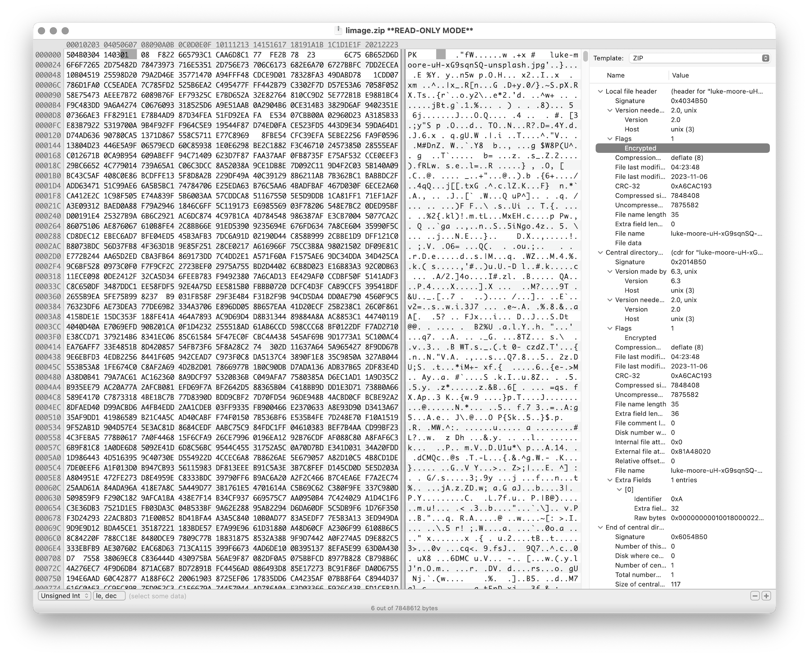

Wer hat schon einmal Software or Hardware Reverse Engineering betrieben?
Wer kennt Java Bytecode?
Wer hat Erfahrung mit Python?
Reverse Engineering ist die Analyse von Systemen mit dem Ziel, ihren Aufbau und ihre Funktionsweise zu verstehen.
Typische Anwendungsfälle:
die Rekonstruktion (von Teilen) des Quellcodes von Programmen, die nur als Binärabbild vorliegen.
die Analyse von Kommunikationsprotokollen proprietärer Software
Vom Reverse Engineering ist das Reengineering zu unterscheiden. Im Fall von letzteren geht es nur darum die Funktionalität eines bestehenden Systems mit neuen Techniken wiederherzustellen.
Herstellung von Interoperabilität
Untersuchung auf Schwachstellen
Untersuchung auf Copyrightverletzungen
Untersuchung auf Backdoors
Analyse von Viren, Würmern etc.
Umgehung von ungerechtfertigten(?) Schutzmaßnahmen (z. B. bei Malware)
Informationsgewinnung zur Gewinnung aller relevanten Informationen über das Produkt
Modellierung mit dem Ziel der (Wieder-)Gewinnung eines (abstrakten) Modells der relevanten Funktionalität.
Überprüfung (review) des Modells auf seine Richtigkeit und Vollständigkeit.
Gegeben sei eine App zum Ver- und Entschlüsseln von Dateien sowie ein paar verschlüsselte Dateien. Mögliche erste Schritte vor der Analyse von Binärcode:
Die ausführbare Datei ggf. mit file überprüfen (z. B. wie kompiliert und für welches Betriebssystem und Architektur)
Beispiel:
$ file /usr/bin/openssl /usr/bin/openssl: Mach-O universal binary with 2 archi... /usr/bin/openssl (for architecture x86_64): Mach-O 64-bit /usr/bin/openssl (for architecture arm64e): Mach-O 64-bit
Die Dateien mit einem (guten) Hexeditor auf Auffälligkeiten untersuchen.
Die Datei auf bekannte Viren und Malware überprüfen.
Eine Datei mit einem bekannten Inhalt verschlüsseln und danach vergleichen.
Ist die Datei gleich groß?
Falls ja, dann werden keine Metainformationen gespeichert und das Passwort kann (ggf.) nicht (leicht) verifiziert werden.
Eine Datei mit verschiedenen Passworten verschlüsseln.
Sind die Dateien gleich?
Falls ja, dann wäre die Verschlüsselung komplett nutzlos und es gilt nur noch den konstanten Schlüssel zu finden.
Gibt es Gemeinsamkeiten?
Falls ja, dann wäre es möglich, dass das Passwort (gehasht) in der Datei gespeichert wird.
Eine Datei mit einem wohldefinierten Muster verschlüsseln, um ggf. den "Mode of Operation" (insbesondere ECB) zu identifizieren.
Mehrere verschiedene Dateien mit dem gleichen Passwort verschlüsseln
Gibt es Gemeinsamkeiten?
Falls ja, dann wäre es möglich, dass die entsprechenden Teile direkt vom Passwort abgeleitet werden/damit verschlüsselt werden.
...
unterschiedliche nationale Gesetzgebung
Rechtslage in Deutschland hat sich mehrfach geändert
Umgehung von Kopierschutzmechanismen ist im Allgemeinen verboten
Lizenz verbietet das Reverse Engineering häufig
Studieren des Programms ohne es auszuführen; typischerweise mittels eines Disassemblers oder eines Decompilers.
Ausführen des Programms; typischerweise unter Verwendung eines Debuggers oder eines instrumentations Frameworks (z. B. Frida).
Kombination aus statischer und dynamischer Analyse.
Ansätze wie Unicorn, welches auf QEmu aufbaut, erlaubt zum Beispiel die Ausführung von (Teilen von) Binärcode auf einer anderen Architektur als der des Hosts.
Ein Beispiel wäre die Ausführung einer Methode, die im Code verschlüsselte hinterlegte Strings entschlüsselt (deobfuscation), um die Analyse zu vereinfachen.
Ggf. müssen für Teile des Codes, die die Hostfunktionalität nutzen, Stubs/Mocks bereitgestellt werden.
Überführt (maschinenlesbaren) Binärcode in Assemblercode
Beispiel:
objdump -d
gdb
radare
javap (für Java)
Überführt (maschinenlesbarem) Binärcode bestmöglich in Hochsprache (meist C oder Java). Eine kleine Auswahl von verfügbaren Werkzeugen:
Hex-Rays IDAPro (kommerziell)
Ghidra (unterstützt fast jede Platform; die Ergebnisse sind sehr unterschiedlich)
JadX (Androids .dex Format)
CFR (Java .class Dateien)
IntelliJ
Mittels Decompiler ist es ggf. möglich Code, der zum Beispiel ursprünglich in Kotlin oder Scala geschrieben und für die JVM kompiliert wurde, als Java Code zurückzubekommen.
Die Ergebnisse sind für Analysezwecke zwar häufig ausreichend gut - von funktionierendem Code jedoch ggf. ((sehr) weit) entfernt.
Beispiel fehlgeschlagener Dekompilierung
Dient der schrittweisen Ausführung des zu analysierenden Codes oder Hardware; ermöglichen zum Beispiel Speicherinspektion und Manipulation.
gdb
lldb
x64dbg (Windows, Open-Source)
jdb (Java Debugger)
Auch für das Debuggen von Hardware gibt es entsprechende Werkzeuge, z. B. Lauterbach Hardware Debugger Mittels solcher Werkzeuge ist es möglich die Ausführung von Hardware Schritt für Schritt (single step mode`) zu verfolgen und den Zustand der Hardware (Speicher und Register) zu inspizieren. Dies erfordert (z.Bsp.) eine JTAG Schnittstelle.
Techniken, die dazu dienen das Reverse Engineering zu erschweren.
Häufig eingesetzt ...
von Malware
Adware (im Kontext von Android ein häufig beobachtetes Phänomen)
zum Schutz geistigen Eigentums
für DRM / Durchsetzung von Kopierrechten
zur Prävention von Cheating (insbesondere im Umfeld von Online Games)
Wenn das Programm als Source Code vertrieben wird (JavaScript)
Arbeiten auf Quellcode oder Maschinencode Ebene
Grenze zwischen Code Minimization, Code Optimization und Code Obfuscation ist fließend.
Mögliche Werkzeuge (ohne Wertung der Qualität/Effektivität):
[Java] Proguard / Dexguard
[C/C++] Star Force
Gerade im Umfeld von klassischen Binaries für Windows, Mac und Linux erhöhen Compiler Optimierungen, z. B. von C/C++ und Rust Compilern (-O2 / -O3), bereits den Aufwand, der notwendig ist den Code zu verstehen, erheblich.
entfernen aller Debug-Informationen
das Kürzen aller möglichen Namen (insbesondere Methoden und Klassennamen)
das Verschleiern von Konstanten durch den Einsatz vermeintlich komplexer Berechnungen zu deren Initialisierung.
~(((int)Math.PI) ^ Integer.MAX_VALUE >> 16)+Short.MAX_VALUE= 2
Obfuscation auf Source Code Ebene: International Obfuscated C Code Contest
die Verwendung von Unicode Codepoints für Strings oder die Verschleierung von Strings mittels rot13 Verschlüsselung.
/* ??? */ printf("\x48""e\154l\x6F"" \127o\x72""l\144!");/* = */ printf("Hello World!");das Umstellen von Instruktionen, um das Dekompilieren zu erschweren
das Hinzufügen von totem Code
den relevanten Teil der Anwendung komprimieren und verschlüsseln und erst bei Verwendung entpacken und entschlüsseln.
...
Umstellen von Instruktionen
Das Umstellen von Instruktionen erschwert die Analyse, da viele Werkzeuge zum Dekompilieren auf die Erkennung von bestimmten Mustern im Code angewiesen sind und ansonsten nur sehr generischen (Spagetti Code) oder gar unsinnigen Code zurückgeben.
Verschleierung von Strings
Das Verschleiern von Strings kann insbesondere das Reversen von Binärcode erschweren, da ein Angreifer häufig nur an einer ganz bestimmten Funktionalität interessiert ist und dann Strings ggf. einen sehr guten Einstiegspunkt für die weitergehende Analyse bieten.
Stellen Sie sich eine komplexe Java Anwendung vor, in der alle Namen von Klassen, Methoden und Attributen durch einzelne oder kurze Sequenzen von Buchstaben ersetzt wurden und sie suchen danach wie von der Anwendung Passworte verarbeitet werden. Handelt es sich um eine GUI Anwendung, dann wäre zum Beispiel die Suche nach Text, der in den Dialogen vorkommt (z. B. "Password") z. B. ein sehr guter Einstiegspunkt.
Java Bytecode ist die Sprache, in der Java (oder Scala, Kotlin, Groovy, ...) Programme auf der Java Virtual Machine (JVM) [1] ausgeführt werden.
In den meisten Fällen arbeiten Java Decompiler so gut, dass ein tiefgehendes Verständnis von Java Bytecode selten notwendig ist.
Java Bytecode kann, muss aber nicht interpretiert werden. (z. B. können virtuelle Methodenaufrufe in Java schneller sein als in C++)
Die JVM ist eine stackbasierte virtuelle Maschine; die getypten Operanden eines Befehls werden auf einem Stack abgelegt und die Operationen arbeiten auf den obersten Elementen des Stacks. Jeder Thread hat seinen eigenen Stack.
Instruktion
nop bipush 100 → int bipush 50 → int iadd ← 2 ⨉ int → intStack
└─────┘ │ 100 │ └─────┘ │ 50 │ │ 100 │ └─────┘ │ 150 │ └─────┘
Die benötigte Höhe des Stacks wird vom Compiler berechnet und von der JVM überprüft.
Die Java Virtual Machine verwendet lokale Variablen zur Übergabe von Parametern beim Methodenaufruf.
Beim Aufruf von Klassenmethoden (static) werden alle Parameter in aufeinanderfolgenden lokalen Variablen übergeben, beginnend mit der lokalen Variable 0. d. h. in der aufrufenden Methode werden die Parameter vom Stack geholt und in lokalen Variablen gespeichert.
Beim Aufruf von Instanzmethoden wird die lokale Variable 0 dazu verwendet, um die Referenz (this) auf das Objekt zu übergeben, auf dem die Instanzmethode aufgerufen wird. Anschließend werden alle Parameter in aufeinanderfolgenden lokalen Variablen übergeben, beginnend mit der lokalen Variable 1.
Die Anzahl der benötigten lokalen Variablen wird vom Compiler berechnet und von der JVM überprüft.
Ein Constructor welcher keine expliziten Parameter hat und nur den super Konstruktor aufruft.
// Method descriptor #8 ()V
// Stack: 1, Locals: 1
public Main();
0 aload_0 [this]
1 invokespecial java.lang.Object() [31]
4 returnDie Zeilennummern und die Informationen über die lokalen Variablen ist optional und wird nur für Debugging Zwecke benötigt.
Line numbers: [pc: 0, line: 9]
Local variable table: [pc: 0, pc: 5] local: this
index: 0
type: de.dhbw.simplesecurepp.MainEs gibt weitere Metainformationen, die nur für Debugging-Zwecke benötigt werden, z. B. Informationen über die ursprünglich Quelle des Codes oder die sogenannte "Local Variable Type Table" in Hinblick auf generische Typinformationen. Solche Informationen werden häufig vor Auslieferung entfernt bzw. nicht hineinkompiliert.
// Method descriptor #36 ([Ljava/lang/String;)V
// Stack: 5, Locals: 8
public static void main(java.lang.String[] args) throws ...;
0 aload_0 [args]
1 arraylength
2 iconst_2
3 if_icmpeq 74 // integer comparison for equality
6 getstatic java.lang.System.err : java.io.PrintStream
9 ldc <String "SimpleSecure++">
11 invokevirtual java.io.PrintStream.println(java.lang.String) : void
...In einigen Anwendungsgebieten ist es möglich auf das explizite Speichern von Passwörtern ganz zu verzichten [*].
Stattdessen wird z. B. einfach versucht das Ziel zu entschlüsseln und danach evaluiert ob das Passwort (vermutlich) das Richtige war.
Kann darauf verzichtet werden zu überprüfen ob das Passwort korrekt war, dann sind keine Metainformationen notwendig und die verschlüsselte Datei kann genau so groß sein wie die unverschlüsselte Datei.